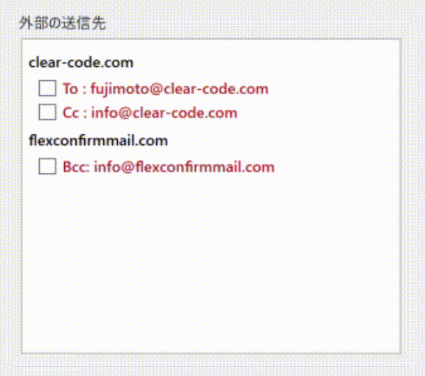
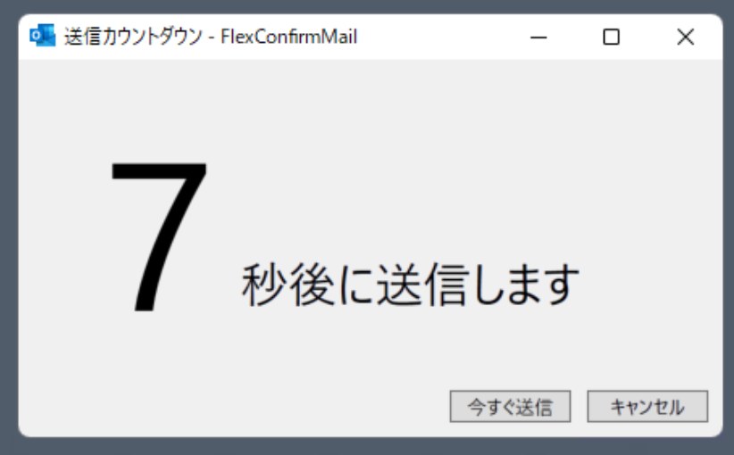
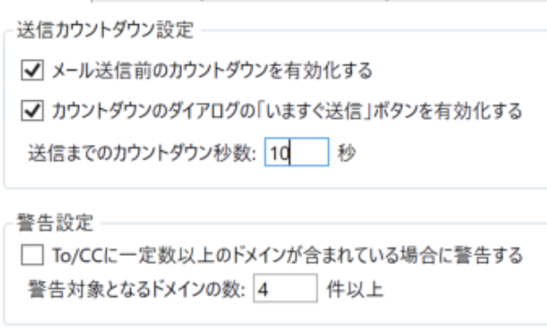

FlexConfirmMailとは#
FlexConfirmMailは誤送信を防止するためのメールクライアント向けアドオンです。
メールの送信時に宛先と添付ファイルを確認するダイアログを表示します。
チェックリスト形式で分かりやすくミスが無いか確認することができます。
株式会社クリアコード が開発しています。
FlexConfirmMailは何を解決するのか？
電子メールはビジネスにおける中心的なコミュニケーションの手段です。 非常に便利な手段である反面で、様々なヒューマンエラーが起きやすい 要注意ポイントでもあります。
関係のない第三者を間違ってCcに含めてメールを送信してしまった。
社内用のファイルを外部の宛先に添付して送付してしまった。
To/Ccでアナウンスを一斉送信したため、受信者の氏名が漏洩してしまった。
FlexConfirmMailはこれらの問題を「仕組みによって解決する」という コンセプトのもとで開発されたものです。
製品ハイライト#
わかりやすい確認画面 宛先のアドレスが社内・社外か、またTo・Cc・Bccのどの区分にあるかなどを見やすく確認できます。 |
 |
ミスを防ぐチェック後の時間差送信 FlexConfirmMailはメールを遅延送信する機能を備えています。実際の送信までにタイムラグを設けることで、「しまった！」という場合も途中で送信を取り消すことができます。 |
 |
使い方に応じた柔軟な設定 確認画面の挙動を細かく設定で制御することができるので、自分のワークフローにあったスタイルでチェックできます。 |
 |